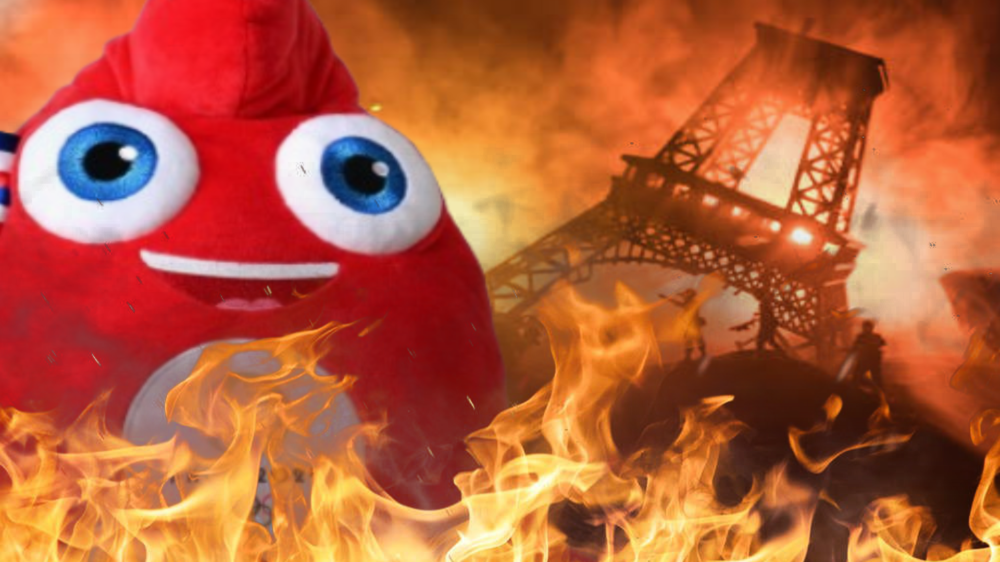

Fiction sonore narrative d'environ 3 minutes, écrite et réalisée dans l'esprit d'Arte Radio autour d'un Paris sous tension pendant les JO 2024.

Projet de fiction sonore réalisé dans le cadre de la formation Studio M. Le sujet traite de l'ambiance des Jeux Olympiques 2024 à Paris à travers un point de vue narratif : un journaliste se déplace dans la ville et capte les tensions du quotidien.
Le rendu final a été accompagné d'un oral de présentation, avec justification des choix narratifs, techniques et esthétiques. L'objectif était de produire une écoute claire et immersive pour toute personne, sans dépendre d'un contexte visuel.
Le brief imposait de produire un podcast dans l'esprit de la ligne éditoriale d'Arte Radio, avec les contraintes suivantes :
Slot visuel 02 : projet_audiovisuel_1-02-placeholder.webp
Le pitch s'appuie sur une fiction ancrée dans une réalité urbaine : foule, transports, tension sociale, saturation de l'espace public. La narration suit un journaliste en déplacement dans Paris, avec un enchaînement de scènes courtes pour garder un rythme clair et immersif.
L'objectif était de faire ressentir le chaos par la mise en scène sonore, sans surcharger le texte et en gardant une narration compréhensible. Le traitement conserve aussi un ton légèrement humoristique sur certaines interactions, pour garder de la respiration dans l'écoute.
La narration a été pensée en micro-séquences courtes, avec une alternance entre voix, ambiances et respirations pour maintenir l'attention sans perdre la clarté du fil conducteur. Chaque scène devait faire avancer la perception du chaos, sans noyer l'auditeur sous l'information.
J'ai assuré l'enregistrement de toutes les personnes impliquées dans le projet (doubleurs), puis l'édition des prises pour conserver une diction naturelle, un niveau homogène et une bonne intelligibilité dans le mix final.
Une difficulté importante du projet était de faire travailler plusieurs voix non professionnelles de manière cohérente. Il a fallu organiser les disponibilités, expliquer précisément l'intention attendue, guider les interprétations pendant la prise et refaire certaines répliques jusqu'à obtenir un ton juste et exploitable dans le montage.
Slot visuel 03 : projet_audiovisuel_1-03-placeholder.webp
Le montage a été construit pour articuler clairement la narration, les ambiances de foule, les éléments sonores de transport et les respirations entre séquences. Le mixage a priorisé la lisibilité des voix tout en gardant une atmosphère réaliste.
Le sound design ne servait pas seulement à "habiller" le projet : il portait une partie du récit. Les transports, les foules et les tensions urbaines devaient faire ressentir la situation avant même que tout soit explicitement dit par le texte.
Conformément aux consignes, les sons d'archives utilisés ont été documentés dans un fichier de provenance.
L'arbitrage principal consistait à faire ressentir la tension sans saturer l'écoute. Le chaos devait être perçu comme un choix de mise en scène, pas comme une confusion de montage.